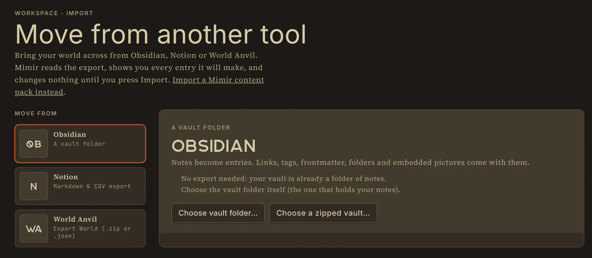
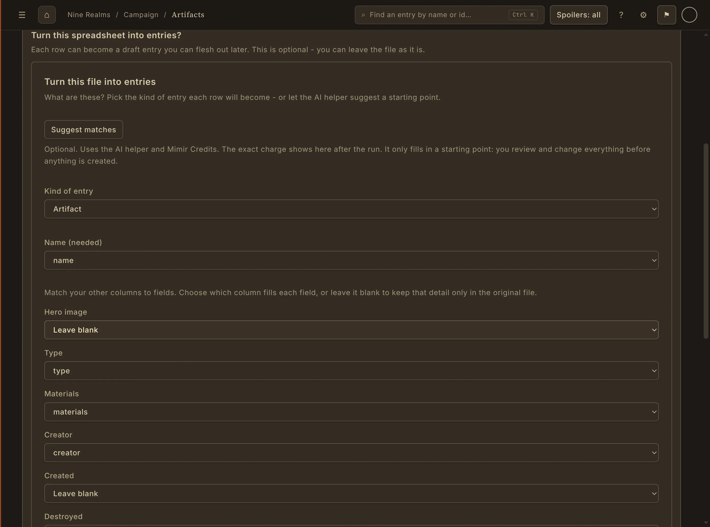

Your notes become connected entries.
Choose the vault folder or the export file. Mimir reads it, shows what it contains, and lets you set each entry's type and name before you press Import.
Obsidian: each note becomes an entry, with its frontmatter as fields, its folders as a guide to type, and its [[wikilinks]], tags and embedded pictures.
Notion: each database row or page becomes an entry, with database columns as fields, page links and relations as links, and images added to your world.
World Anvil: each article becomes an entry and each timeline entry becomes an event, with template fields and mentions as links. World Anvil keeps pictures on its own servers, so they come across as web links. The World Anvil importer has been tested with sample exports; tell us if yours does not come across cleanly.

Careful by design.
Importing never overwrites by surprise. If an entry with the same name already exists, you choose to skip it, keep both, or overwrite after a second check. Importing the same export twice changes nothing.
Anything that does not fit a field is kept on the entry rather than dropped, and links to things outside the export become plain words instead of broken links. Files Mimir could not read are listed with the reason.
- Review every entry before anything is written
- Skip, keep both or overwrite on a name clash
- Unmatched fields kept on the entry, not thrown away
- Your world stays as ordinary files on your computer afterwards
Not using another tool? Bring your files.
Turn CSV and XLSX spreadsheets into entries with a column-by-column mapping, or have Mimir AI read TXT, Markdown and Word documents and suggest entries, each with the words from your document behind it. Reading documents uses Mimir AI credits; every account starts with 200.

Frequently asked questions
- Yes. Choose the vault folder or a zip of it. Each note becomes an entry, with frontmatter as fields and wikilinks, tags and embedded pictures carried across. It is free and works offline.
- Yes. Use Notion's "Markdown & CSV" export. Database rows and pages become entries, columns become fields, and page links and relations become links.
- Yes. Use World Anvil's Export World file. Articles become entries and timeline entries become events. Pictures stay on World Anvil's servers and come across as web links. The importer has been tested with sample exports.
- No. Moving from Obsidian, Notion or World Anvil and importing spreadsheets are free on every plan and use no AI credits. Having Mimir AI read a prose document uses credits.
- No, not by surprise. When a name already exists you choose to skip it, keep both or overwrite, and overwriting asks a second time.
Bring the world you already built.
Mimir's public beta opens soon. Join the beta to be among the first in, or read more about the tools on this page.